Joseph DeVille
GTM Engineer / Forward Deployed Engineer
I build the production systems behind revenue teams: signal feeds, research agents, multi-provider Clay waterfalls, CRM routing, and outbound deliverability. Five years in HubSpot, three years across Salesforce, RevOps, and GTM engineering, measured in pipeline rather than activity.

$1.57M attributed pipeline across 17 builds
Documented in a leadership-facing operations memo as first in-house GTM engineer: Deep Research + Hermes pre-call briefs, daily signal-driven BDR queues, Slack SE request routing, and pre-demo SOAP/Gong/Neon/Linear preflight validation.
40% drop in hard bounces and QA cycle time
Unified cross-MAP bounce suppression with load balancing and receiver-specific throttling to recover sender reputation inside one quarter, alongside Python and OpenAI workflow QA agents that cut manual testing time 40%.
22-mailbox outbound engine + 500-send kill rules
Landed both engagements via own outbound, then built 5-domain sending pools across 55+ microsegments, filtered ~89% non-human security-scanner clicks, and instrumented HubSpot conversion benchmarks (~1.7 to 1.9% positive reply).
Production systems, live apps & open source
Production systems and live products lead first; interactive GTM reference apps use synthetic data so teams can click through routing, scoring, and eval gates safely.
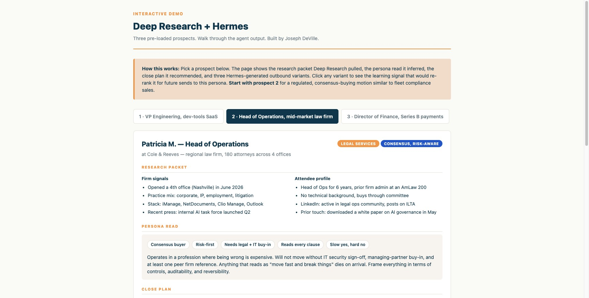
Deep Research + Hermes
What it is
Interactive output sample of the two-agent system shipped at Cortex across technical, legal, and finance personas.
What it does
Triggers on calendar bookings to assemble a research packet, behavioral buyer read, close plan, and self-weighting outbound variants.
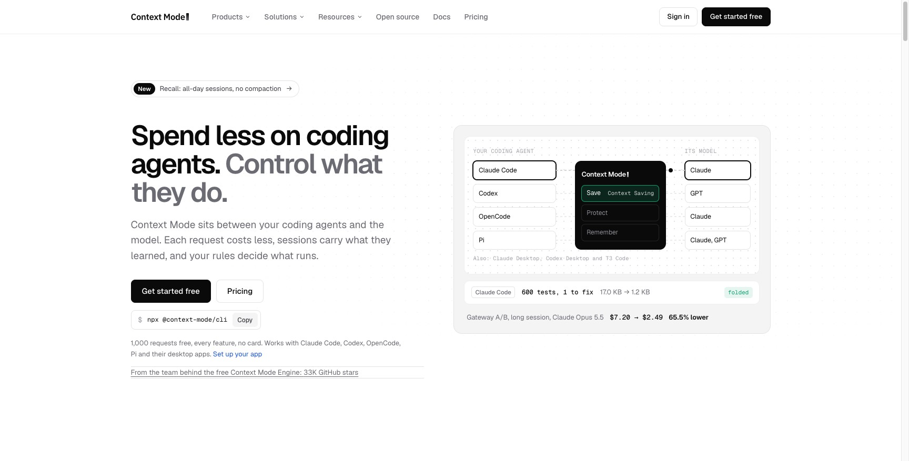
Context Mode
What it is
Context-window optimization product for teams running AI coding agents across 12 platforms.
What it does
Sandboxes bulky tool output (up to 98% token reduction) and preserves shared agent memory across sessions.
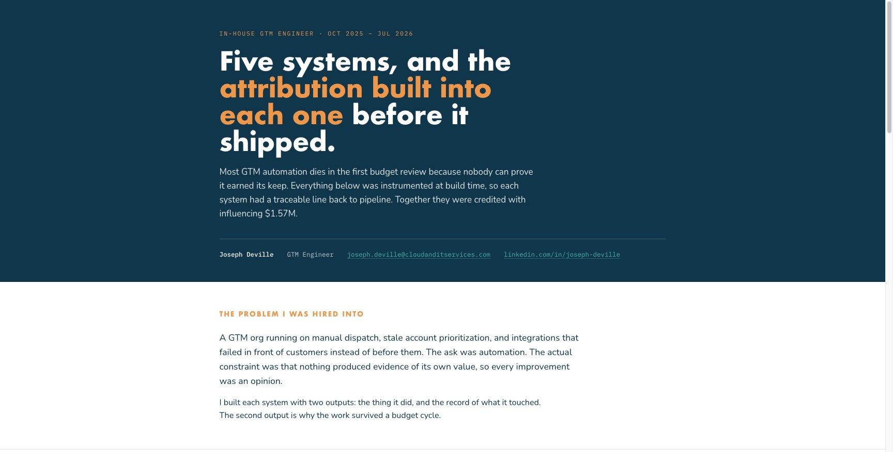
Five Cortex systems
What it is
Detailed breakdown of five internal GTM products designed and shipped at Cortex.
What it does
Documents how SE routing, BDR signal feeds, preflight checks, and attribution drove $1.57M in influenced pipeline.
Engineering case studies & operating model
Read the full problem statements, stacks, kill rules, and outcomes across Cortex Deep Research + Hermes, the 10,000-lead Clay signal feed, Rainforest QA's 40% bounce drop, and Anchor Browser & Crux outbound.
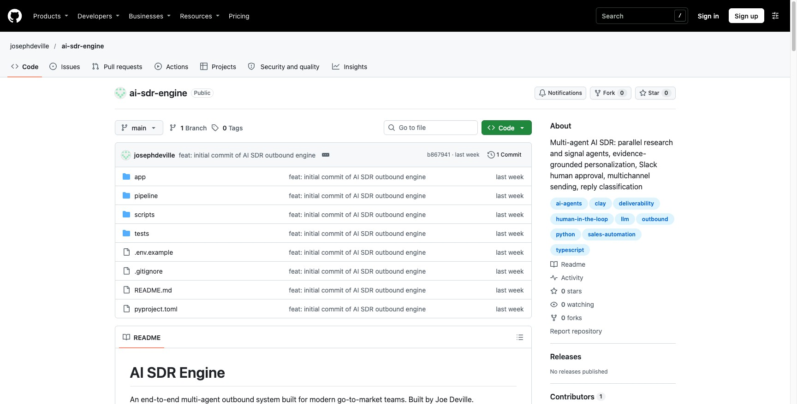
ai-sdr-engine
What it is
Open-source multi-agent outbound pipeline built in Python and TypeScript.
What it does
Runs parallel research and signal agents, gates sends on Slack human approval, and classifies replies. Closest public sibling to Cortex Hermes.
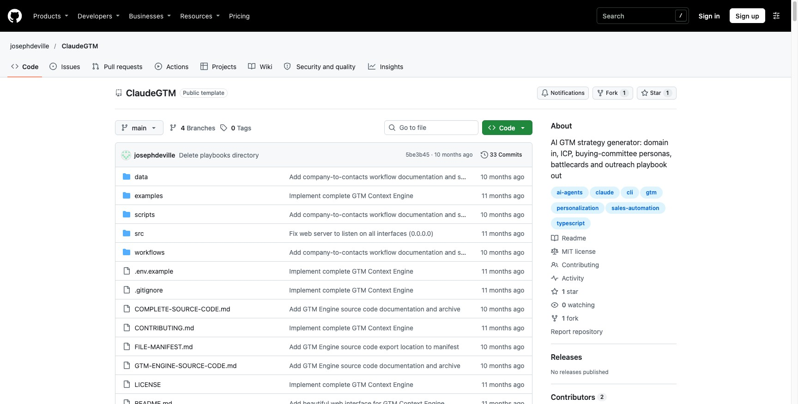
ClaudeGTM
What it is
Domain-in, GTM-playbook-out generator written in TypeScript with the Claude API.
What it does
Maps ICP tiers, buying-committee personas, competitive battlecards, qualification rubrics, and first-touch sequences from one company URL.
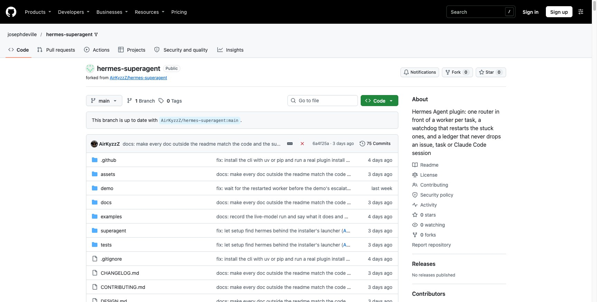
hermes-superagent
What it is
Supervisor plugin sitting in front of isolated per-task agent workers.
What it does
Routes incoming tasks, restarts stalled workers via watchdog, and persists a durable ledger so long-running sessions never drop.
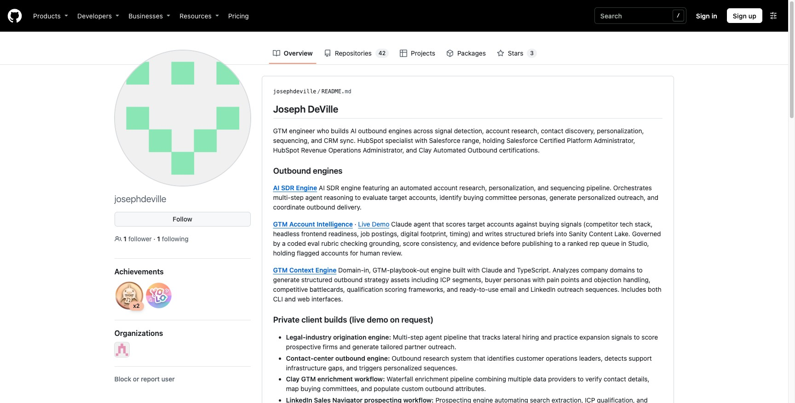
github.com/josephdeville
What it is
Public repositories across MCP servers, Clay SDKs, Trigger.dev pipelines, and agent skills.
What it does
Opens the source code, eval harnesses, and schemas behind the live builds on this page.
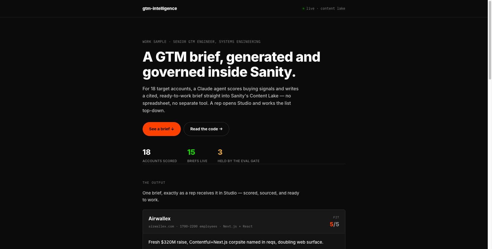
GTM account briefs
What it is
Claude account-intelligence pipeline publishing into a ranked rep queue.
What it does
Checks every generated brief against a coded grounding and score-consistency rubric before a rep sees it.
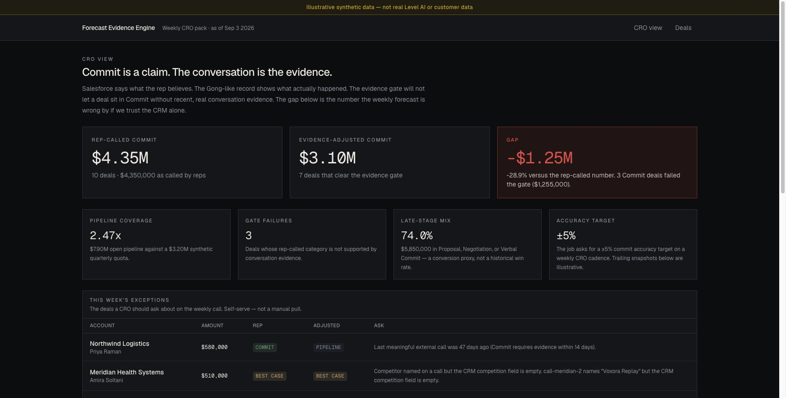
Forecast Evidence Engine
What it is
Executive forecast console over synthetic Gong and Salesforce deal data.
What it does
Places rep-claimed Commit side by side with Commit backed by verified call and stakeholder evidence.
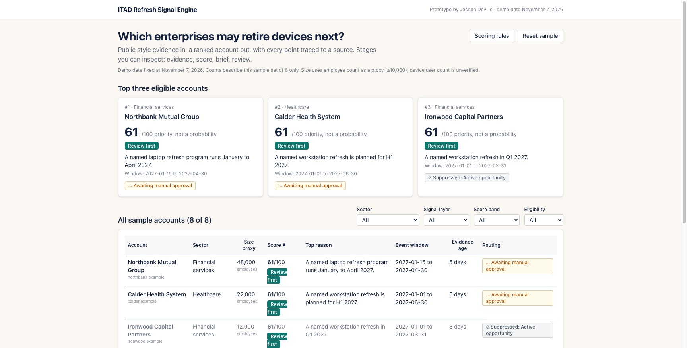
ITAD signal engine
What it is
Ranked enterprise timing queue built from public refresh and facility signals.
What it does
Ranks upcoming hardware refresh windows and suppresses active CRM accounts before outreach.
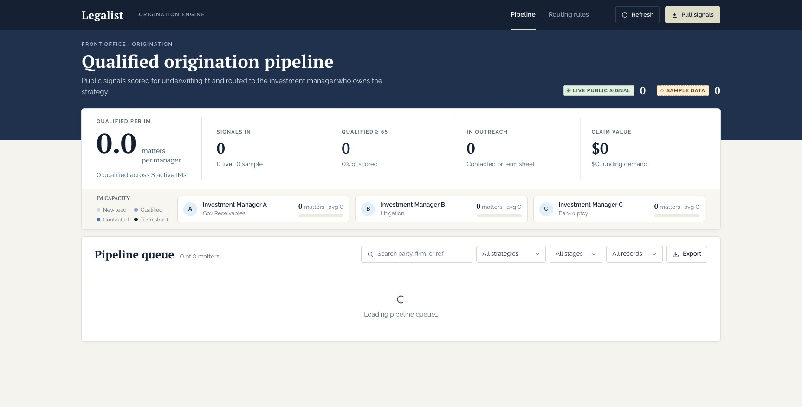
Legalist origination
What it is
Automated front-office origination and underwriting triage screen.
What it does
Scores inbound legal-asset opportunities and stages tailored partner outreach sequences.
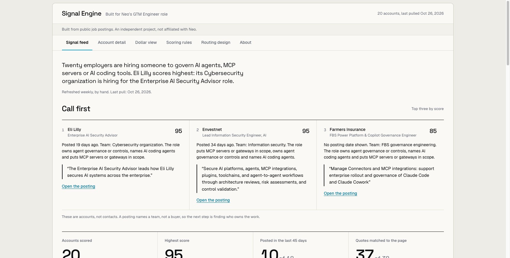
Neo signal engine
What it is
Hiring-signal prospecting feed derived from public job postings.
What it does
Ranks which employers to contact first and surfaces the exact trigger behind the score.
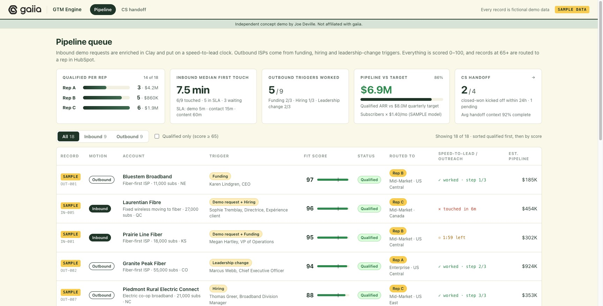
gaiia GTM engine
What it is
Sample pipeline and territory routing board on synthetic ISP data.
What it does
Shows how scored accounts enter a queue and route deterministically to an owner.
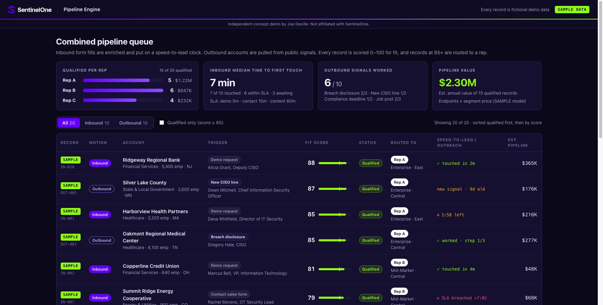
SentinelOne pipeline queue
What it is
Sample security-buyer pipeline workbench on synthetic accounts.
What it does
Lets reps step through prioritized security accounts with trigger context inline.
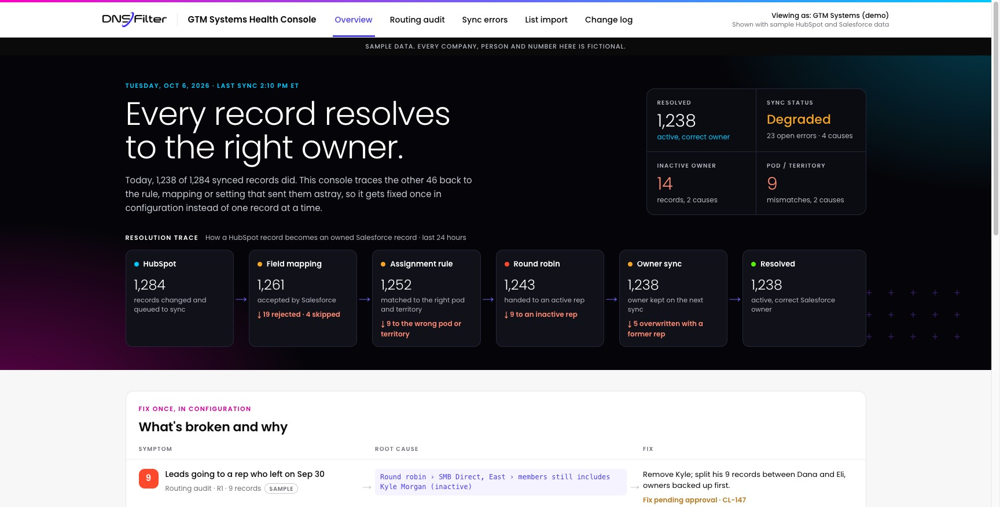
DNSFilter health console
What it is
RevOps data-hygiene and SLA ownership console.
What it does
Enforces explicit owner assignment and flags stalled records before pipeline leaks.
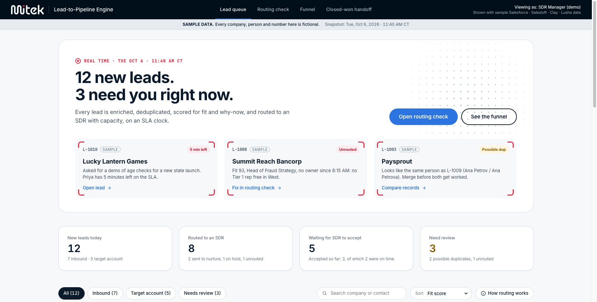
Mitek lead to pipeline
What it is
End-to-end sample flow from inbound/signal capture to qualified deal.
What it does
Walks how raw touches get enriched, scored, and handed off cleanly to sales.
How the flagship pipelines run under the hood
Reference flow behind Deep Research + Hermes and the daily signal-driven BDR feed: deterministic code handles schemas, suppression, and routing, while LLM agents handle research synthesis and copy framing behind coded eval gates.
Event & cron listeners
External calendar bookings, inbound webhooks, or morning scheduled jobs ingest job postings, funding, tech-stack shifts, and Gong/CRM events.
Enrichment + buyer read
Multi-provider waterfalls verify firmographics and contacts; parallel agents assemble the account dossier, behavioral persona read, and close plan.
Rubric + CRM suppression
Coded eval checks claim grounding and score consistency; deterministic CRM/SQL lookup suppresses active deals, customers, closed-lost, and bounced domains.
Slack, CRM & send pools
Posts pre-call briefs in Slack 30 minutes before meetings, populates Salesforce/HubSpot queues, and paces multi-domain sends per mailbox and ISP.
Telemetry & kill rules
Filters bot scanner clicks (~89%), ties prompt versions to positive replies and stage progression, kills variants under 0.5% at 500 sends, and re-ranks signals monthly.
From cloud & MDM infrastructure to GTM engineering
Cortex · GTM Engineer
Oct 2025 – Jul 2026First in-house GTM engineer. Designed and shipped 17 production systems credited with influencing $1.57M in pipeline in a leadership ops impact memo: Slack SE request routing, daily signal-driven BDR feed (10,000+ leads scored), Deep Research + Hermes pre-call and outbound agents, full-funnel Clay waterfalls into Salesforce/HubSpot/Marketo, and a pre-demo validation suite across Salesforce SOAP, Gong, Neon Postgres, and Linear.
Ignyte Assurance · GTM Engineer
Apr 2024 – Oct 2025Built and deployed LangChain automation agents for lead qualification and pipeline forecasting, custom TypeScript services orchestrating marketing-to-sales workflows, and Python ETL pipelines across SQL and NoSQL stores powering executive reporting.
Rainforest QA · RevOps Engineer (Contract)
Apr 2024 – Jan 2025Shipped Python and OpenAI agents for automated GTM workflow testing (cutting QA time 40%), engineered multi-MAP sending infrastructure with centralized bounce suppression and throttling (cutting hard bounces 40%), and built React/TypeScript pipeline dashboards.
Jamf · Sales Development Representative
Jul 2023 – Apr 2024Exceeded monthly quota by 15% and lifted meeting conversion 25% across enterprise Apple endpoint management accounts, giving me the ground-level rep perspective my GTM systems now serve.
Ellucian · Cloud Administrator
Apr 2022 – Jun 2023Maintained hybrid cloud infrastructure across 600+ servers and endpoints (lifting security posture 91%), migrated Exchange, SQL, and web workloads to the cloud, and administered Intune, Azure, and Jamf MDM for 500+ devices.
Earlier systems & IT foundation
2014 – 2022Senior Helpdesk Technician at BrookeSource (2020–2022) · IT Support Specialist at Amazon (2016–2018) · A.S. in Information Technology, ITT Technical Institute.
- Salesforce Platform Foundations Salesforce
- HubSpot Revenue Operations Admin HubSpot
- Clay Automated Outbound Clay
- Cold Email Infrastructure Expert Salesforge
- Postman API Fundamentals Postman
I build GTM systems reps actually use.
Because I came up through enterprise IT, cloud administration, and carrying an SDR bag at Jamf before moving into RevOps and GTM engineering, I build with both halves in mind: clean database schemas and preflight health checks on the backend, and zero-extra-tab Slack and CRM surfaces for reps on the front end.
I split automation strictly by task: deterministic code where schemas hold (enrichment waterfalls, lead scoring, routing, CRM sync, bounce suppression) and feedback-driven agents behind coded eval rubrics where judgment varies (account research, buyer persona reads, outbound framing). One foot in pipeline this quarter, one in process that compounds.
Let's talk GTM systems or AI agents
Based in Houston, TX (US Central) and working remote across B2B SaaS full-time roles and select GTM / agent infrastructure builds.